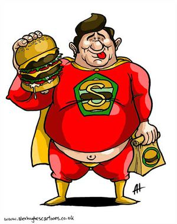

Capitán Almería
 De: La Frikipedia, la enciclopedia extremadamente seria.
De: La Frikipedia, la enciclopedia extremadamente seria.
| De la serie Superhéroes:
|
| Capitán Almería
|
|
|
| Capitan pobre que se viste con la bandera de USA.
|
|
| Nacimiento:
|
1941
|
| Muerte:
|
Pendiente
|
| Superpoderes:
|
Lanzar un escudo
|
| Debilidad:
|
Zoofilia
|
| Asistente
|
Nadie
|
| Notas:
|
Se cre presidente de cuba Eua.
|
Este personaje nació en sanjuán del 2006 a consecuencia de sobredosis de cacique y otras drogas.
Después de un análisis exhaustivo de su sangre se descubrió que está formada por un 40% de kalimotxo , un 40% de cacique y un 20% de otras drogas no identificadas todavía.
Este personaje sigue siendo poco conocido pero en breves días será el más importante de la provincia.
Se dice que por las noches sale a vagar por la ciudad en busca de callorros(así llamamos a los cani en Almería) gentuza a los que castigar con un par de sumas para que mueran pensando. Aparentemente vive en un bar jebi , de ahí su característico olor a sobaquina , tabaco, alcohol y porros , sobretodo a porros.
Escondrijo

en sus inicios este era su uniforme, pero pegó el estirón y tuvo que hacerle su madre otro.
El capitán almería , vive en el garaje de sus padres , es lo mas lejos que ha estado de sus padres , ya que el trabajo de superhéroe no está remunerado y la precariedad laboral no se puede permitir una casa propia(que te voy a contar yo a tí que no sepas ya).
Eso sí , su base secreta es un bar jebi.
Uniforme
El capitán almeria, al contrario de otros superheroes, tiene los calzoncillos por dentro, además lleva una boina y bigote postizo.
Disfrazado así, espera que nadie lo reconozca. La identidad secreta de capitán almería es la de un lerdo conocido como teodoro campurriano. Se pone una boina bigote postizo y es irreconocible. A todo esto, su identidad sólo es secreta para los habitantes de almería, puesto que sus enemigos saben como se llama y hasta donde vive.
Para colmo, su novia es tan tonta que es incapaz de reconocer que teodoro y capitán almería son el mismo, aunque pase con él cada segundo de su vida , salvo cuando está en peligro y da la casualidad que teodoro fue a mear y no encontró un baño una distancia considerable, puesto que al capitán almería le da tiempo a salvar a cinco mil personas, una a una.
Enemigos
retrato robot con la figura algo estilizada
El capitán almería tiene muchisimos enemigos, (uno por episodio) pero el principal es rex de luto, un millonario que sabe todo sobre el capitán almería, pero incomprensiblemente no lo da a conocer a la opinión pública, en vez de eso, planifíca planes para destruir al capitán almería cada vez más rebuscados. En sus tiempos libres se dedica a planear un plan para dominar el mundo.
Esta es la lista de sus otros enemigos:
- Marginado resentido que utiliza sus nuevas habilidades para vengarse de los populares.
- Tío popular , que en vez de superpoderes, tiene supernecesidades y que tiene que matar a alguien para sobrevivir.
- Amigo de capitán almería es infectado con chistorranita y se vuelve malo, pero nuestro heroe le da dos tortas y se vuelven buenos. eso si, le da tan fuerte que después no se acuerda de nada.
- Su novia se convierte en una bruja, en un desesperado intento de afán de protagonísmo.
se parece al capitán américa , pero no lo es.
Superpoderes
- Volar: como el capitán almería no tiene capa , tiene que utilizar otro recurso para volar , utiliza la fuerza propulsora que le da sus ventosidades , para ello tiene que alimentarse con judías todos los dias.
- Supervelocidad: es capaz de recorrer a pie velocidades cercanas a la de la luz , pero sin embargo cuando vuela va algo más lento , puesto que no tiene aún dominado el vuelo con metano-propulsión.
- Superfuerza: este poder es necesario para el primero, sin super fuerza sería incapaz de conseguir la propulsión necesaria para anular la fuerza de gravedad de la tierra.
Durante su niñez , mató a muchas personas sin querer, por no dominar esta habilidad.
 Durante una época se dejó ir un poco
- Rayos x: este es el superpoder mas práctico durante su adolescencia. No paraba de mirar con sus rayos x a las chicas del insti. Pero un dia sufrió un cambio hormonal y los rayos x se convirtieron en rayos laser y fulminó a la jefa de animadoras, por lo que le cogieron manía sus compañeros desde entonces.
Debilidades
El capitán almería tiene 3 debilidades las cuales enumeraremos una a una , por si quieres emplearlas cuando se te cruce por el camino:
- La chistorranita: no lo matarás ni lo debilitarás, es más, le darás mas fuerza, pero en grandes cantidades y de una forma contínua el colesterol hará su trabajo, solamente tendrás que esperar.
- CHistorranita roja: con esta variante de chistorranita se vuelve deshinibido, es capaz de bajarse los pantalones y hacer malabarismos con su super-chistorra (que hábil he estado para esquivar la palabra poll...)
- La chistorranita negra: con esta variante de chistorranita se vuelve requetemalo, no saluda al pasar, toca timbres y sale corriendo... en definitiva un energúmeno.
Villa-pequeñita
Villa pequeñita, es un pueblo de almería donde se crió el capitan almería. Donde transcurren los primeros años del capitán almería, teodoro campurriano.
Es un pueblo que por lo visto son todos raros debido a una partida de fabada asturiana en mal estado, los dos únicos que no estan infectados son su novia de la infancia y su archienemigo, rex de luto, que o se queda inconsciente cada dos por tres, para que el capitán almería pueda realizar sus maniobras heróicas, o si no lo está y le ve actuando se da un golpe y lo olvida todo.
Logia de superheroes
El capitán almería pertenece a un club selecto de superheroes , en el que para ingresar tienen que tener alguna cualidad que le sirva para hacer el bien. esta es la lista de miembros de la logia de superheroes:
- Super-ego: al princípio tenía impulsos, deseos, desbalances. Cuando se fue formando como superheroe más tarde Logró satisfacer las necesidades principales como el hambre, sueño, sed incluido sexo (dentro de parámetros sociales). finalmente adquirió conceptos de moral, consciencia, reglas sociales, lo que uno hace en su sociedad, (vamos,un superheroe complicado)
finalmente , cogió las mejores cualidades de cada superhéroe
- Super-mercado: su cualidad mas destacada es la de dar precios más populares que en la pequeña y mediana empresa.
Su principal defecto es el trabajo temporal precario que tanto daño ha hecho en estos años.
- Super califragilístico espialidoso: este superheroe podia volar con un paraguas y cantar canciones ñoñas hasta conseguir que los villanos mueran. Su mayor defecto es que era inglés, no paraba de comer comida inglesa, se le subió el colesterol y murió...atropellado por un carrito de la compra.
- Super-pendicular: este es el miembro mas extraño de todos. Sólo tiene el poder de ir perpendicular a los demás. Se conoce que entró por ser familia de un miembro destacado de la logia de los superheroes.
Amigos del Capitán almería
Durante su infancia y después adolescencia , no tuvo muchos amigos , y los que tuvo acabaron huyendo, algunos pasaron varias veces en el hospital... y algún que otro muerto. Aquí tienes una lista de los que aun viven:
- Cloaca súlivan: estaba loquita por el capitán almería, un amor no correspondido, por aquel entónces, el capitán almería salía con una cabra, nada serio, sólo se trataba de sexo, nada más.
- Pit negrata: este era el amigo más envidioso que tenía , se cansó de vivir a la sombra del capitán almería y se fue al norte...a la sombra de los pinos.
- Rex de luto: era su amigo ricachón, que no tenía ni un pelo de tonto, tras una discusión por quién era más fuerte, alien o depredador, dejaron de ser amigos(es más fuerte alien de lejos: (nota del autor)
boletín informativo
Cualquier parecido con el personaje de marvel es pura coincidencia
|
éste es el capitán américa, ¿ no ves la diferencia ? |
éste es el capitán almería, ¿no ves la diferencia ? |
Enlaces de interés
Autor(es):
- Nexo
- MaGiKaL
- Palmero
- Roms
- Azulejos
- Plasnisk
- Helloombark
- Elelawliet
- 62666
- Gñapero Solitario
Frikipedia 2005-2016, Licencia
GFDL 1.2 - Extraído por FrikiLeaks